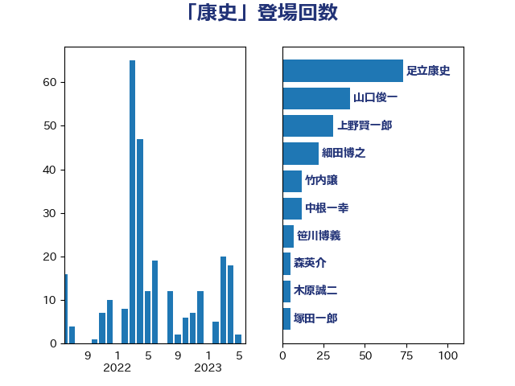

単語「康史」

| 足立康史 | 日本維新の会 | 73 回 |
| 山口俊一 | 自由民主党 | 41 回 |
| 上野賢一郎 | 自由民主党 | 31 回 |
| 細田博之 | 自由民主党 | 22 回 |
| 竹内譲 | 公明党 | 12 回 |
| 中根一幸 | 自由民主党 | 12 回 |
| 笹川博義 | 自由民主党 | 7 回 |
| 森英介 | 自由民主党 | 5 回 |
| 木原誠二 | 自由民主党 | 5 回 |
| 塚田一郎 | 自由民主党 | 5 回 |
| 根本匠 | 自由民主党 | 3 回 |
| 古屋範子 | 公明党 | 3 回 |
| 高木毅 | 自由民主党 | 2 回 |
| 馬場伸幸 | 日本維新の会 | 2 回 |
| 鈴木淳司 | 自由民主党 | 2 回 |
| 稲津久 | 公明党 | 2 回 |
| 木原稔 | 自由民主党 | 2 回 |
| 宮下一郎 | 自由民主党 | 2 回 |
| 大野敬太郎 | 自由民主党 | 2 回 |
| 一谷勇一郎 | 日本維新の会 | 2 回 |
| 青柳仁士 | 日本維新の会 | 1 回 |
| 遠藤良太 | 日本維新の会 | 1 回 |
| 藤岡隆雄 | 立憲民主党 | 1 回 |
| 玉木雄一郎 | 国民民主党 | 1 回 |
| 浅川義治 | 日本維新の会 | 1 回 |
| 橋本岳 | 自由民主党 | 1 回 |
| 市村浩一郎 | 日本維新の会 | 1 回 |
| 岸田文雄 | 自由民主党 | 1 回 |
| 小野泰輔 | 日本維新の会 | 1 回 |
| 小里泰弘 | 自由民主党 | 1 回 |
| 堀場幸子 | 日本維新の会 | 1 回 |
| 吉良州司 | 無所属 | 1 回 |